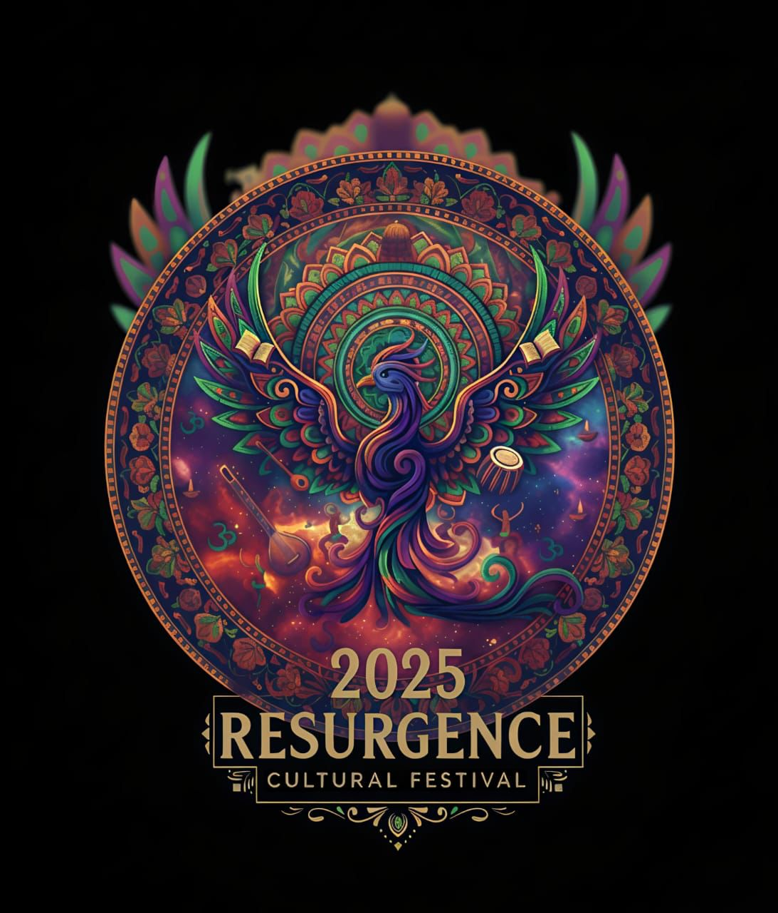

Experience the rebirth of art, music, and creativity at Shri Mata Vaishno Devi University’s most awaited cultural extravaganza. A celebration of talent, rhythm, and colors — Resurgence 2025 awaits you!